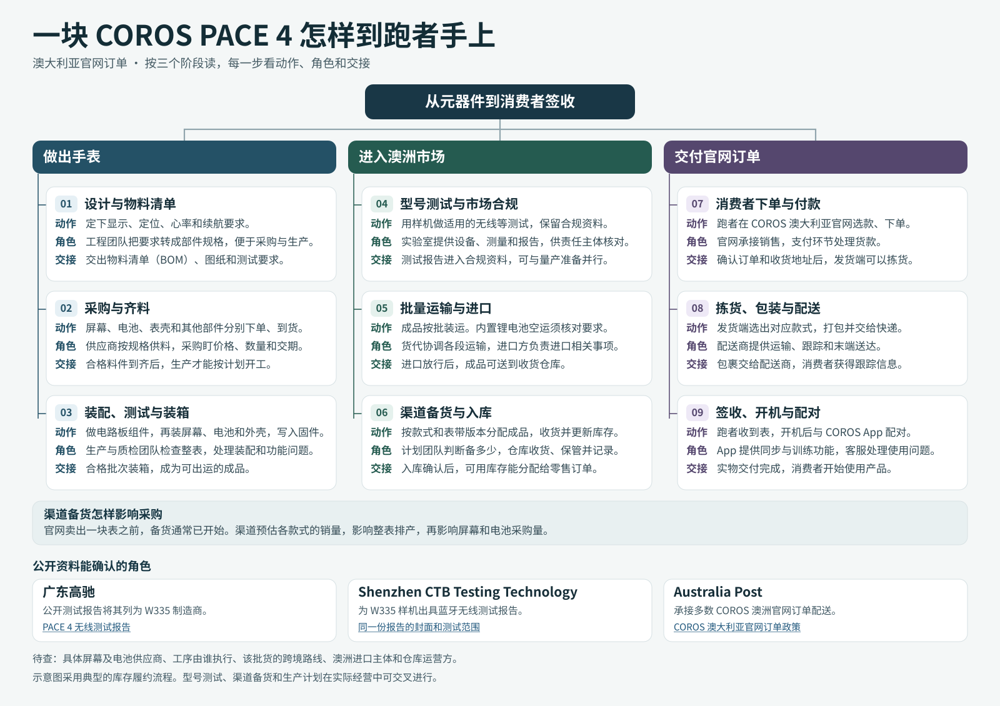
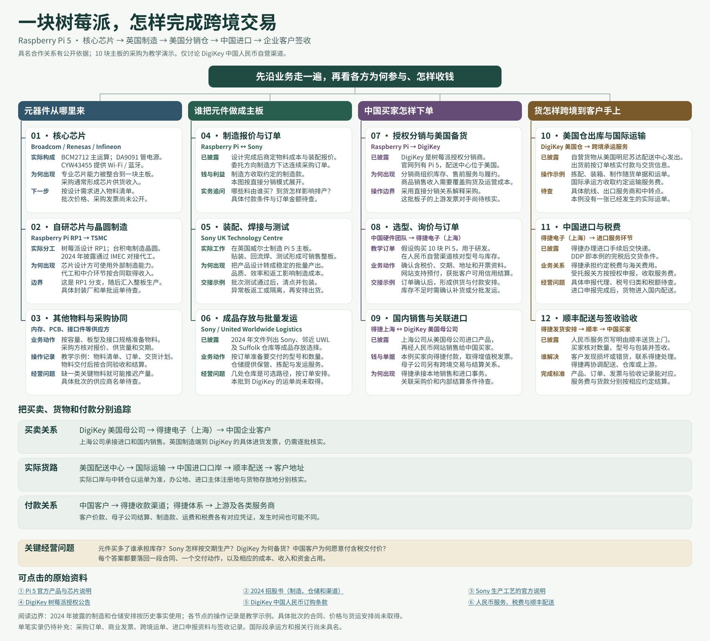

章节目录
第 03 章 · 硬件供应链
科技产品怎样跨境交付
用一块运动手表和一块单板计算机，比较制造、分销与跨境履约的证据。
思维导图

高驰公开资料与典型库存履约流程。未披露的具体供应商和进口批次保留待查。

具名合作关系有公开依据。购买 10 块主板是教学设定。
具体情境
COROS PACE 4：从生产到澳大利亚消费者
沿屏幕、电池和电路板去看，工程人员定义规格，采购和制造把部件转成整表，测试与验收决定型号或批次能否进入下一环节，渠道准备库存后才能按件配送。这是典型生产和履约的示意。
公开可核实 W335 的蓝牙测试报告列明广东高驰为制造商、Shenzhen CTB Testing Technology 为测试方。澳大利亚官网政策称多数官网订单通过 Australia Post 配送。测试报告、零售页面和配送政策可以各自证实一段关系。具体部件供方、进口主体及批次货路仍待查。
树莓派 5：向中国客户交付研发用板
公开可核实 Raspberry Pi 5 的公开资料列出 Broadcom 主芯片、Renesas 电源管理芯片和树莓派设计的 RP1，也介绍了 Sony 在威尔士的制造。DigiKey 是授权分销商。
教学情境 一家中国研发团队通过 DigiKey 中国人民币自营渠道采购 10 块板。公开订购条款说明，得捷电子（上海）向美国母公司进口产品，再向中国客户销售。货从美国明尼苏达配送中心发出，由得捷安排进口，人民币服务说明列明顺丰配送。采购人可付款给中国销售主体并收到国内发票，货物则经历国际运输。该设定不代表有一笔已取得完整单据的交易。
关键判断
- 产品规格能确定部件功能，交易文件才能对应具体供货
- 型号测试报告能说明测试对象与测试方。要追某批整机的采购、组装和运输，需要对应批次的采购、交付及物流凭证。
- 分开看谁售货、谁进口、谁派送
- 品牌销售页、进口资料、商业发票和物流记录各有作用。公司注册地也不等同于货物停留的地点。
讨论题
先讨论，再展开参考分析。
一份手表测试报告能证明什么？
能按报告范围识别送测型号、报告所列制造商和测试机构。整条量产链、某块表的部件来源和跨境交付，需用对应的业务资料继续核对。
人民币付款和国内发票，为什么还能对应跨境业务？
客户向中国销售主体购买。该主体可以通过另一段采购从海外进口，两个交易和一段实际跨境货路同时存在。